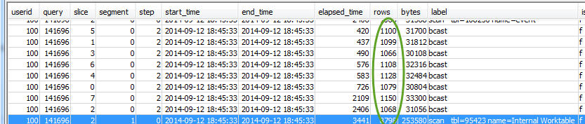

como usar a visualização SVL_QUERY_REPORT
Para analisar as informações de resumo de consultas por fatia, faça o seguinte:
-
Execute o seguinte para determinar o ID de sua consulta:
select query, elapsed, substring from svl_qlog order by query desc limit 5;Examine o texto truncado da consulta no campo
substringpara determinar qual valor dequeryrepresenta a sua consulta. Se você executou a consulta mais de uma vez, use o valor dequeryda linha com o menor valorelapsed. Esta é a linha para a versão compilada. Se você estiver executando várias consultas, poderá aumentar o valor usado pela cláusula LIMIT usada para certificar-se de que sua consulta seja incluída. -
Selecione linhas do SVL_QUERY_REPORT para sua consulta. Classifique os resultados por segmento, etapa, tempo decorrido e linhas:
select * from svl_query_report where query = MyQueryID order by segment, step, elapsed_time, rows; -
Para cada etapa, verifique se todas as fatias estão processando aproximadamente o mesmo número de linhas:
Verifique também se todas as fatias estão utilizando, aproximadamente, a mesma quantidade de tempo:

Grandes discrepâncias nesses valores podem indicar desvio de distribuição de dados em decorrência de um estilo menos satisfatório de distribuição para esta consulta específica. Para soluções recomendadas, consulte Distribuição de dados pouco satisfatória.